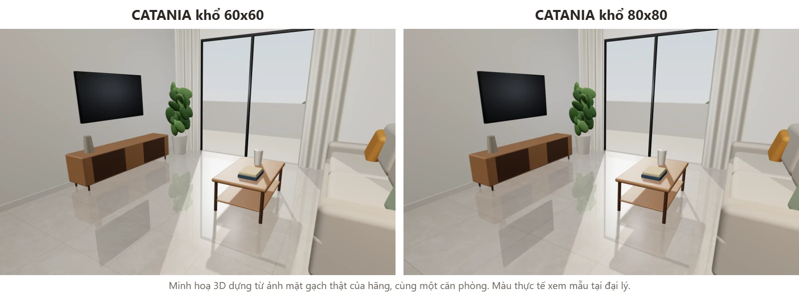
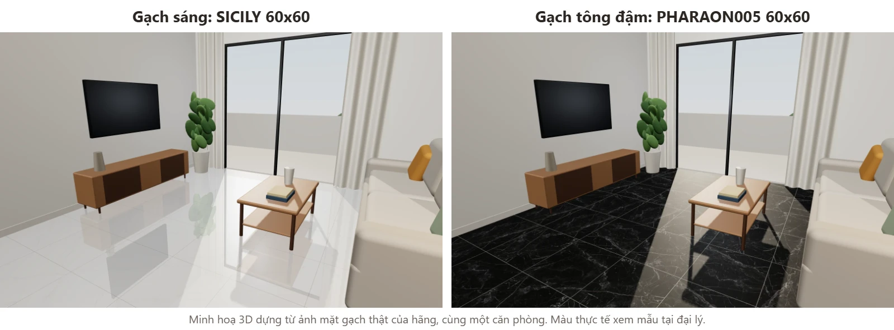
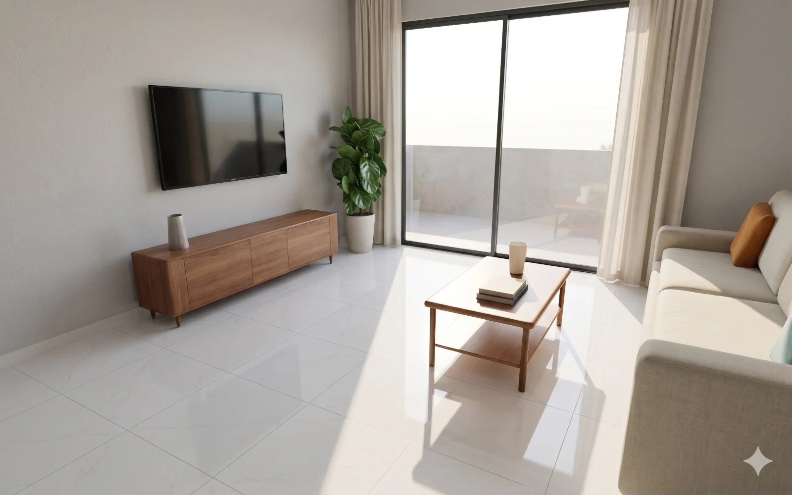
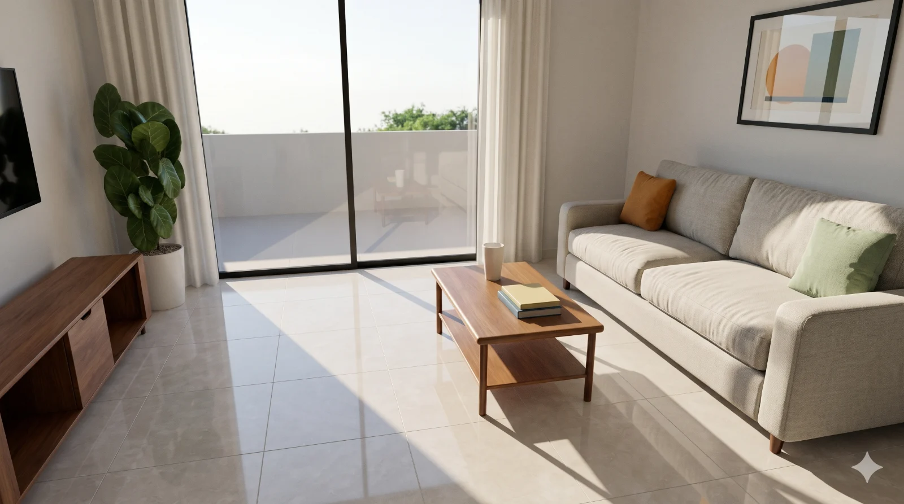

02Giải pháp: chọn đúng khổ, đúng màu, đúng hoa văn
Theo tài liệu đào tạo tư vấn của ngành gạch, một phòng khách nhỏ trông rộng hơn khi anh chị lưu ý ba điều sau.
1. Khổ gạch: 60x60 hoặc 80x80 là vừa vặn
Gạch khổ lớn hơn giúp giảm số đường ron, mặt sàn nhìn liền mạch, mắt không bị cắt vụn. Vì vậy phòng nhỏ không nên dùng gạch khổ bé. Nhưng cũng không nên chọn khổ quá lớn, vì với phòng hẹp, viên gạch to quá có thể cho hiệu ứng ngược về thị giác.
| Diện tích phòng khách | Khổ gạch lát nền nên chọn |
|---|---|
| Dưới 20m² | 60x60 hoặc 80x80 |
| Khoảng 20 đến 40m² | 80x80 hoặc 100x100 |
| Trên 40m² | 100x100 hoặc khổ lớn hơn |
Phòng càng gần mức 20m², anh chị có thể nghiêng về 80x80. Phòng nhỏ hẳn, nhiều góc cạnh thì 60x60 dễ cân đối hơn và ít phải cắt viên.

2. Màu gạch: ưu tiên tông sáng
Các màu có độ phản quang cao như trắng, kem nhạt, vàng nhạt phản chiếu ánh sáng nhiều, phòng sáng và thoáng hơn. Ngược lại, nâu, đen, xám đậm phản quang thấp nên phòng dễ tối và chật.
- Trắng: sáng, sạch, hiện đại, hợp phòng khách nhỏ. Bù lại dễ lộ vết bẩn, cần lau thường xuyên hơn.
- Kem: ấm áp, dễ chịu cho nhà ở gia đình, vẫn giữ được độ sáng cho phòng.
- Màu đậm: chỉ nên dùng ở chi tiết nhỏ như đường viền, một mảng tường điểm nhấn, không nên lát cả sàn phòng nhỏ.

3. Hoa văn: nhẹ nhàng hoặc trơn
Phòng nhỏ nên tránh gạch họa tiết mạnh, hoa văn đậm. Khi kê thêm nội thất, sàn sẽ rối mắt. Gạch trơn, vân đá nhẹ hoặc vân mây là lựa chọn an toàn. Vân mây mềm mại, ở diện tích nhỏ cho cảm giác rộng và thoáng. Nếu thích vân đá, nên chọn vân nhỏ, vân lớn để dành cho không gian rộng.
Mẹo thi công nhỏ: với gạch vuông, anh chị có thể hỏi thợ về cách lát theo đường chéo. Kiểu lát này tạo hiệu ứng mở rộng không gian, nhưng tốn công cắt viên hơn, nên bàn trước với thợ và đại lý về lượng gạch cần dự phòng.
Dưới đây là các mẫu Porcelain màu sáng, hoa văn nhẹ, hợp phòng khách nhỏ. Hai mẫu đầu thuộc dòng 60x60 mới và đang bán chạy:
- SICILY 60x60, nền trắng, vân Carrara: vân mảnh, ngắn, nối nhau nhẹ nhàng, hợp đúng lời khuyên "phòng hẹp chọn vân nhỏ".
- CATANIA 60x60, nền kem, vân Crema Marfil: đường vân mảnh trên nền kem, cho phòng khách ấm mà vẫn sáng.
- SNOW 60x60, trắng trơn: cho ai thích tối giản, sàn sạch và liền mạch.
- Vân mây 80x80, màu kem: cho phòng gần 20m² muốn ít đường ron hơn nữa.

